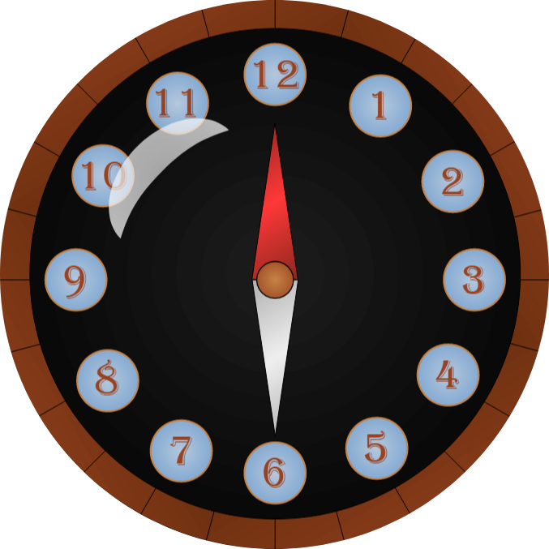

L'horloge cardinale
Quand on regarde une carte du ciel, on peut se demander pourquoi on n'utilise pas simplement une boussole pour s'orienter, comme on le ferait avec une carte de randonnée. La réponse est assez simple : le ciel change constamment. Les étoiles semblent se déplacer au cours de la nuit, non pas parce qu'elles bougent réellement, mais à cause de la rotation de la Terre.
Ainsi, ce que l'on voit dans le ciel dépend à la fois de l'heure et de la date. Ce n'est pas comme une carte ordinaire où les éléments restent fixes. Une boussole peut nous indiquer le nord, bien sûr, mais elle ne peut pas nous dire quelles constellations seront visibles à un moment donné.

De plus, la boussole fonctionne grâce au champ magnétique terrestre, qui est un phénomène lié à notre planète. Elle est utile pour se repérer
sur Terre, mais elle n'a aucun lien avec les mouvements du ciel.
Il faut également savoir que le ciel change lentement au fil des siècles. À cause de phénomènes comme la précession de la Terre, les étoiles n'occupent pas exactement les mêmes positions qu'il y a mille ou deux mille ans. Le ciel des anciens n'est donc pas tout à fait le même que le nôtre.
C'est pour cette raison que l'on utilise plutôt une carte qui fonctionne comme une horloge. En la réglant en fonction de l'heure, du jour et parfois même de l'époque, on peut savoir quelles étoiles seront visibles et dans quelle direction les observer. On peut alors parler d'« horloge cardinale » : un outil qui lie le temps et l'espace pour nous aider à lire le ciel.